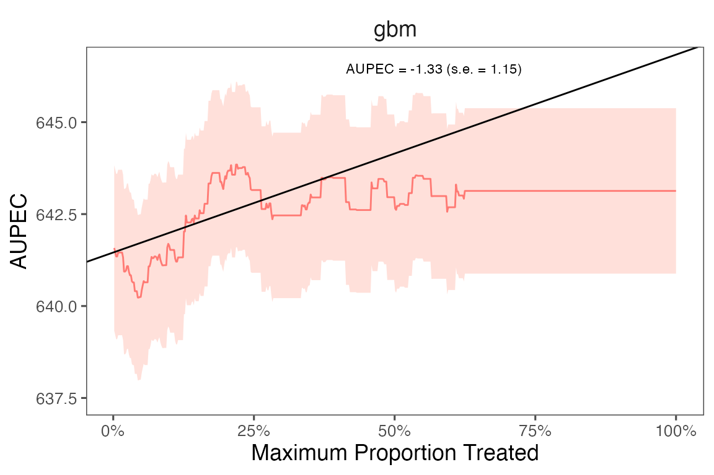
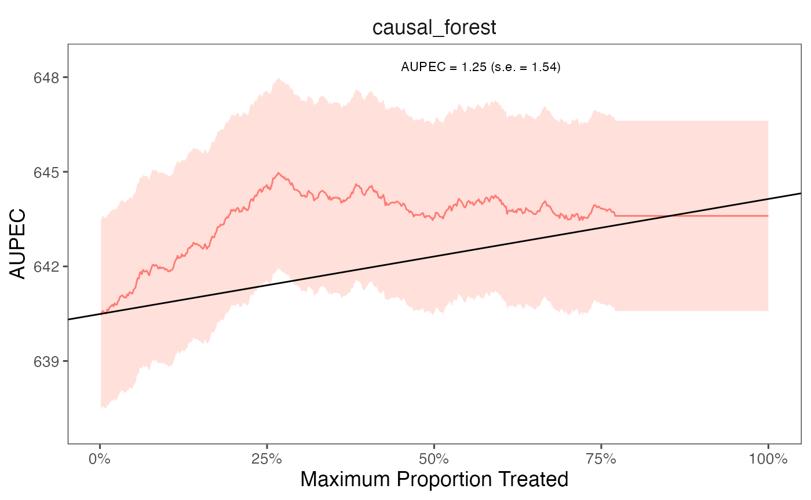
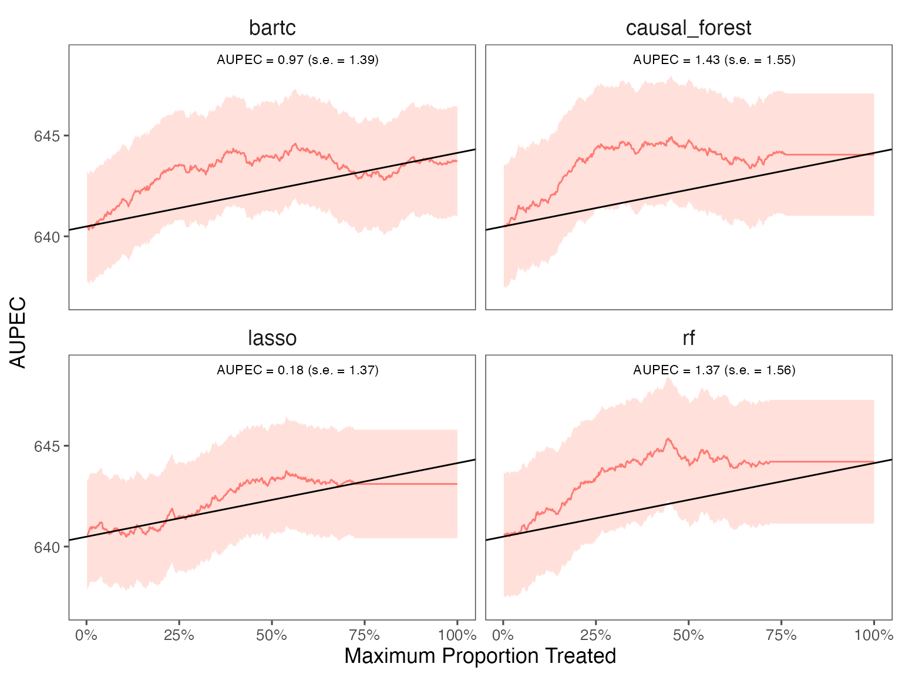

Installation
You can install the development version of evalITR from GitHub with:
# install.packages("devtools")
devtools::install_github("MichaelLLi/evalITR", ref = "causal-ml")(Optional) if you have multiple cores, we recommendate using multisession futures and processing in parallel. This would increase computation efficiency and reduce the time to fit the model.
library(furrr)
library(future.apply)
nworkers <- 4
plan(multisession, workers =nworkers)Example under sample splitting
This is an example using the star dataset (for more information about the dataset, please use ?star).
We start with a simple example with one outcome variable (writing scores) and one machine learning algorithm (causal forest). Then we move to incoporate multiple outcomes and compare model performances with several machine learning algorithms.
To begin, we load the dataset and specify the outcome variable and covariates to be used in the model. Next, we utilize a random forest algorithm to develop an Individualized Treatment Rule (ITR) for estimating the varied impacts of small class sizes on students’ writing scores. Since the treatment is often costly for most policy programs, we consider a case with 20% budget constraint (budget = 0.2). The model will identify the top 20% of units who benefit from the treatment most and assign them to with the treatment. We train the model through sample splitting, with the split_ratio between the train and test sets determined by the split_ratio argument. Specifically, we allocate 70% of the data to train the model, while the remaining 30% is used as testing data (split_ratio = 0.7).
library(tidyverse)
library(evalITR)
load("data/star.rda")
# specifying the outcome
outcomes <- "g3tlangss"
# specifying the treatment
treatment <- "treatment"
# specifying the data (remove other outcomes)
star_data <- star %>% dplyr::select(-c(g3treadss,g3tmathss))
# specifying the formula
user_formula <- as.formula(
"g3tlangss ~ treatment + gender + race + birthmonth + birthyear + SCHLURBN + GRDRANGE + GKENRMNT + GKFRLNCH + GKBUSED + GKWHITE ")
# estimate ITR
fit <- estimate_itr(
treatment = treatment,
form = user_formula,
data = star_data,
algorithms = c("causal_forest"),
budget = 0.2,
split_ratio = 0.7)
#> Evaluate ITR under sample splitting ...
# evaluate ITR
est <- evaluate_itr(fit)
#> Cannot compute PAPDpAlternatively, we can train the model with the caret package (for further information about caret, see caret).
# alternatively (with caret package)
# specify the trainControl method
fitControl <- caret::trainControl(## 3-fold CV
method = "repeatedcv",
number = 3,
## repeated 3 times
repeats = 3)
# specify the tuning grid
gbmGrid <- expand.grid(interaction.depth = c(1, 5, 9),
n.trees = (1:30)*50,
shrinkage = 0.1,
n.minobsinnode = 20)
# estimate ITR
fit_caret <- estimate_itr(
treatment = "treatment",
form = user_formula,
trControl = fitControl,
data = star_data,
algorithms = c("gbm"),
budget = 0.2,
split_ratio = 0.7,
tuneGrid = gbmGrid,
verbose = FALSE)
# evaluate ITR
est_caret <- evaluate_itr(fit_caret)
# check the final model
est_caret$estimates$models$gbm$finalModelThesummary() function displays the following summary statistics: (1) population average prescriptive effect PAPE; (2) population average prescriptive effect with a budget constraint PAPEp; (3) population average prescriptive effect difference with a budget constraint PAPDp. This quantity will be computed with more than 2 machine learning algorithms); (4) and area under the prescriptive effect curve AUPEC. For more information about these evaluation metrics, please refer to Imai and Li (2021); (5) Grouped Average Treatment Effects GATEs. The details of the methods for this design are given in Imai and Li (2022).
# summarize estimates
summary(est)
#> ── PAPE ────────────────────────────────────────────────────────────────────────
#> estimate std.deviation algorithm statistic p.value
#> 1 1.4 1.2 causal_forest 1.1 0.27
#>
#> ── PAPEp ───────────────────────────────────────────────────────────────────────
#> estimate std.deviation algorithm statistic p.value
#> 1 1.6 1.3 causal_forest 1.3 0.21
#>
#> ── PAPDp ───────────────────────────────────────────────────────────────────────
#> data frame with 0 columns and 0 rows
#>
#> ── AUPEC ───────────────────────────────────────────────────────────────────────
#> estimate std.deviation algorithm statistic p.value
#> 1 1.8 1 causal_forest 1.8 0.071
#>
#> ── GATE ────────────────────────────────────────────────────────────────────────
#> estimate std.deviation algorithm group statistic p.value upper lower
#> 1 -24 107 causal_forest 1 -0.22 0.825 -200.3 153
#> 2 -231 108 causal_forest 2 -2.14 0.032 -408.5 -54
#> 3 160 109 causal_forest 3 1.47 0.141 -18.9 340
#> 4 173 108 causal_forest 4 1.61 0.108 -4.2 351
#> 5 -69 107 causal_forest 5 -0.64 0.521 -245.2 108
# similarly for caret
# summary(est_caret)We can extract estimates from the est object. The following code shows how to extract the GATE estimates for the writing score with rlasso and lasso algorithms.
# plot GATE estimates
summary(est)$GATE %>%
mutate(group = as_factor(group)) %>%
ggplot(., aes(
x = group, y = estimate,
ymin = lower , ymax = upper, color = algorithm)) +
ggdist::geom_pointinterval(
width=0.5,
position=position_dodge(0.5),
interval_size_range = c(0.8, 1.5),
fatten_point = 2.5) +
theme_bw() +
theme(panel.grid = element_blank(),
panel.background = element_blank()) +
labs(x = "Group", y = "GATE estimate") +
geom_hline(yintercept = 0, linetype = "dashed", color = "#4e4e4e") +
scale_color_manual(values = c("#E69F00", "#56B4E9", "#009E73", "#076f00", "#0072B2")) We plot the estimated Area Under the Prescriptive Effect Curve for the writing score across a range of budget constraints for causal forest.
# plot the AUPEC
plot(est)
Example under cross-validation
The package also allows estimate ITR with k-folds cross-validation. Instead of specifying the split_ratio argument, we choose the number of folds (n_folds). The following code presents an example of estimating ITR with 3 folds cross-validation. In practice, we recommend using 10 folds to get a more stable model performance.
# estimate ITR
set.seed(2021)
fit_cv <- estimate_itr(
treatment = treatment,
form = user_formula,
data = star_data,
trcontrol = fitControl,
algorithms = c("causal_forest"),
budget = 0.2,
n_folds = 3)
#> Evaluate ITR with cross-validation ...
# evaluate ITR
est_cv <- evaluate_itr(fit_cv)
#> Cannot compute PAPDp
# summarize estimates
summary(est_cv)
#> ── PAPE ────────────────────────────────────────────────────────────────────────
#> estimate std.deviation algorithm statistic p.value
#> 1 0.49 0.91 causal_forest 0.54 0.59
#>
#> ── PAPEp ───────────────────────────────────────────────────────────────────────
#> estimate std.deviation algorithm statistic p.value
#> 1 2.6 0.76 causal_forest 3.4 6e-04
#>
#> ── PAPDp ───────────────────────────────────────────────────────────────────────
#> data frame with 0 columns and 0 rows
#>
#> ── AUPEC ───────────────────────────────────────────────────────────────────────
#> estimate std.deviation algorithm statistic p.value
#> 1 1.2 1.5 causal_forest 0.81 0.42
#>
#> ── GATE ────────────────────────────────────────────────────────────────────────
#> estimate std.deviation algorithm group statistic p.value upper lower
#> 1 -85 59 causal_forest 1 -1.45 0.15 30 -201
#> 2 40 59 causal_forest 2 0.68 0.50 157 -76
#> 3 29 59 causal_forest 3 0.50 0.62 145 -86
#> 4 13 59 causal_forest 4 0.22 0.82 129 -103
#> 5 21 102 causal_forest 5 0.20 0.84 220 -179
# plot the AUPEC
plot(est_cv)
Example with multiple ML algorithms
We can estimate ITR with various machine learning algorithms and then compare the performance of each model. The package includes all ML algorithms in the caret package and 2 additional algorithms (causal forest and bartCause).
The package also allows estimate heterogeneous treatment effects on the individual and group-level. On the individual-level, the summary statistics and the AUPEC plot show whether assigning individualized treatment rules may outperform complete random experiment. On the group-level, we specify the number of groups through ngates and estimating heterogeneous treatment effects across groups.
# specify the trainControl method
fitControl <- caret::trainControl(
method = "repeatedcv",
number = 3,
repeats = 3)
# estimate ITR
set.seed(2021)
fit_cv <- estimate_itr(
treatment = "treatment",
form = user_formula,
data = star_data,
trControl = fitControl,
algorithms = c(
"causal_forest",
"bartc",
"lasso", # from caret package
"rf"),
budget = 0.2,
n_folds = 3)
#> Evaluate ITR with cross-validation ...
#> fitting treatment model via method 'bart'
#> fitting response model via method 'bart'
#> fitting treatment model via method 'bart'
#> fitting response model via method 'bart'
#> fitting treatment model via method 'bart'
#> fitting response model via method 'bart'
# evaluate ITR
est_cv <- evaluate_itr(fit_cv)
# summarize estimates
summary(est_cv)
#> ── PAPE ────────────────────────────────────────────────────────────────────────
#> estimate std.deviation algorithm statistic p.value
#> 1 0.95 0.82 causal_forest 1.17 0.24
#> 2 -0.32 0.41 bartc -0.79 0.43
#> 3 0.17 1.07 lasso 0.16 0.87
#> 4 1.27 0.95 rf 1.33 0.18
#>
#> ── PAPEp ───────────────────────────────────────────────────────────────────────
#> estimate std.deviation algorithm statistic p.value
#> 1 2.55 0.65 causal_forest 3.91 9.2e-05
#> 2 1.45 0.89 bartc 1.63 1.0e-01
#> 3 -0.21 0.63 lasso -0.33 7.4e-01
#> 4 1.69 1.11 rf 1.52 1.3e-01
#>
#> ── PAPDp ───────────────────────────────────────────────────────────────────────
#> estimate std.deviation algorithm statistic p.value
#> 1 1.11 1.01 causal_forest x bartc 1.09 0.27423
#> 2 2.76 0.80 causal_forest x lasso 3.46 0.00054
#> 3 0.87 0.71 causal_forest x rf 1.22 0.22292
#> 4 1.65 1.02 bartc x lasso 1.62 0.10506
#> 5 -0.24 1.16 bartc x rf -0.21 0.83600
#> 6 -1.89 0.72 lasso x rf -2.62 0.00892
#>
#> ── AUPEC ───────────────────────────────────────────────────────────────────────
#> estimate std.deviation algorithm statistic p.value
#> 1 1.43 1.5 causal_forest 0.92 0.36
#> 2 0.78 1.5 bartc 0.54 0.59
#> 3 0.18 1.4 lasso 0.13 0.90
#> 4 1.37 1.6 rf 0.88 0.38
#>
#> ── GATE ────────────────────────────────────────────────────────────────────────
#> estimate std.deviation algorithm group statistic p.value upper lower
#> 1 -118.1 59 causal_forest 1 -2.013 0.044 -3.1 -233
#> 2 27.0 59 causal_forest 2 0.454 0.650 143.5 -90
#> 3 60.9 59 causal_forest 3 1.034 0.301 176.4 -55
#> 4 7.6 59 causal_forest 4 0.128 0.898 123.7 -109
#> 5 40.9 99 causal_forest 5 0.411 0.681 235.8 -154
#> 6 32.2 59 bartc 1 0.542 0.588 148.8 -84
#> 7 -143.5 59 bartc 2 -2.435 0.015 -28.0 -259
#> 8 33.2 82 bartc 3 0.406 0.685 193.5 -127
#> 9 47.8 59 bartc 4 0.809 0.419 163.5 -68
#> 10 48.5 92 bartc 5 0.529 0.597 228.3 -131
#> 11 -14.4 94 lasso 1 -0.154 0.878 169.2 -198
#> 12 -94.5 90 lasso 2 -1.051 0.293 81.8 -271
#> 13 87.9 99 lasso 3 0.886 0.376 282.4 -107
#> 14 12.6 59 lasso 4 0.214 0.830 127.8 -103
#> 15 26.6 59 lasso 5 0.451 0.652 142.4 -89
#> 16 -37.4 59 rf 1 -0.638 0.523 77.5 -152
#> 17 10.6 59 rf 2 0.180 0.857 126.5 -105
#> 18 -17.6 59 rf 3 -0.299 0.765 97.7 -133
#> 19 66.5 86 rf 4 0.770 0.441 235.9 -103
#> 20 -3.9 60 rf 5 -0.066 0.948 113.0 -121We plot the estimated Area Under the Prescriptive Effect Curve for the writing score across different ML algorithms.
# plot the AUPEC with different ML algorithms
plot(est_cv)
For caret models, we can extract the training model and check the model performance.